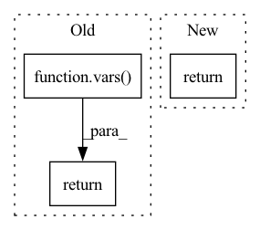

Pattern ID :5628
Before Change
if show_defaults:
return {k: v for k, v in vars(self).items() if k in init_params}
return {k: v for k, v in vars( self) .items()
if k in init_params and v != init_params[k].default}
def finalize_check_result(self, check_result: CheckResult) -> CheckResult:After Change
def params(self, show_defaults: bool = False) -> Dict:
Return parameters to show when printing the check.
return initvars(self, show_defaults)
def finalize_check_result(
self,In pattern: SUPERPATTERN
Frequency: 3
Non-data size: 3
Instances Fragment ID: 19833942
Project Name: deepchecks/deepchecks
Commit Name: a5fcf3ee4a3a25908e587fc7d0458efd4eb7a30b
Time: 2022-05-04
Author: 71635444+yromanyshyn@users.noreply.github.com
File Name: deepchecks/core/checks.py
M Class Name: BaseCheck
N Class Name: BaseCheck
M Method Name: params(2)
N Method Name: params(2)
M Parent Class: abc.ABC
N Parent Class: abc.ABC
M File Name: deepchecks/core/checks.py
N File Name: deepchecks/core/checks.py
M Start Line: 119
M End Line: 124
N Start Line: 121
N End Line: 121
Before Change
for k, v in vars(obj).items()
if k in params
}
return {
k: v
for k, v in vars( obj) .items()
if k in params and v != params[k].default
}
After Change
if not include_kwargs:
arguments.pop("kwargs", None)
return arguments
@lru_cache(maxsize=None) Fragment ID: 19833943
Project Name: deepchecks/deepchecks
Commit Name: 1260120278124ddc69f2428d06fe149fe7ce2f75
Time: 2022-08-16
Author: 71635444+yromanyshyn@users.noreply.github.com
File Name: deepchecks/utils/function.py
M Class Name: AnonimousClass
N Class Name: AnonimousClass
M Method Name: initvars(3)
N Method Name: initvars(2)
M Parent Class:
N Parent Class:
M File Name: deepchecks/utils/function.py
N File Name: deepchecks/utils/function.py
M Start Line: 45
M End Line: 57
N Start Line: 32
N End Line: 64
Before Change
args, _ = parser.parse_known_args()
args = _check_amulet_paths(args)
return vars( args)
if __name__ == "__main__":
// Gathers the command line argumentsAfter Change
args, _ = parser.parse_known_args()
args = _check_amulet_paths(args)
return args
if __name__ == "__main__": Fragment ID: 19833939
Project Name: microsoft/archai
Commit Name: 0270fe2c57565ef4c296077344dbfadc2b46ed8c
Time: 2022-12-16
Author: gth.rosa@uol.com.br
File Name: archai/nlp/metrics/score_with_text_predict.py
M Class Name: AnonimousClass
N Class Name: AnonimousClass
M Method Name: parse_args(0)
N Method Name: parse_args(0)
M Parent Class:
N Parent Class:
M File Name: archai/nlp/metrics/score_with_text_predict.py
N File Name: archai/nlp/metrics/score_with_text_predict.py
M Start Line: 103
M End Line: 129
N Start Line: 76
N End Line: 137